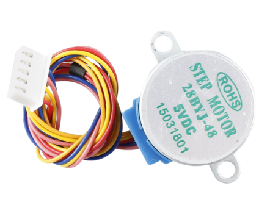
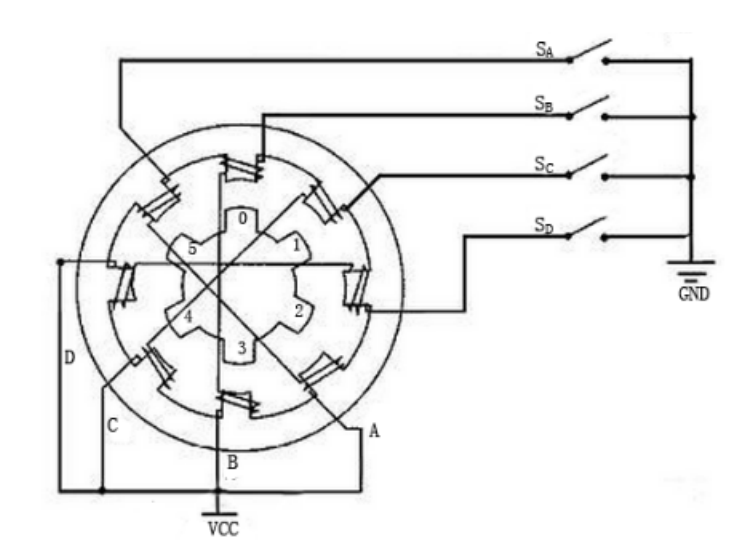
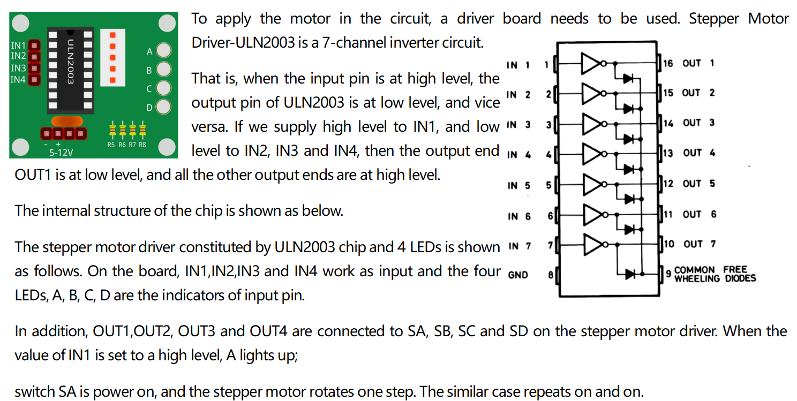

2.14 Schrittmotor¶
Überblick¶
In dieser Lektion lernen Sie den Schrittmotor kennen.
Erforderliche Komponenten¶

Komponenteneinführung¶
Der Schrittmotor ist ein Steuermotor mit offenem Regelkreis, der das elektrische Impulssignal in eine Winkelverschiebung oder eine Linienverschiebung umwandelt. Es ist die Hauptausführungskomponente im modernen digitalen Programmsteuersystem. Wenn der Schritttreiber ein Impulssignal empfängt, treibt er den Schrittmotor an, um einen festen Winkel in eine festgelegte Richtung zu drehen. Die Drehung des Schrittantriebs bewegt sich allmählich in einem festen Winkel. Die Winkelverschiebung kann durch Ändern der Anzahl der Impulse gesteuert werden, um eine präzise Positionierung zu erreichen. Gleichzeitig können Drehzahl und Beschleunigung des Motors durch Einstellen der Pulsfrequenz gesteuert werden, um den Zweck der Drehzahlregelung zu erreichen.
Es gibt zwei Arten von Steppern, Unipolare und Bipolare, und es ist sehr wichtig zu wissen, mit welchem Typ Sie arbeiten. In diesem Experiment verwenden wir einen unipolaren Stepper.
Der Schrittmotor ist ein Vierphasenmotor, der eine Gleichstromversorgung mit Unipolarität verwendet. Solange Sie alle Phasenwicklungen des Motors durch eine geeignete Zeitfolge elektrifizieren, können Sie ihn Schritt für Schritt drehen lassen. Das schematische Diagramm eines vierphasigen reaktiven Schrittmotors:
In der Abbildung befindet sich in der Mitte des Motors ein Rotor - ein zahnradförmiger Permanentmagnet. Um den Rotor herum sind 0 bis 5 Zähne. Dann weiter draußen gibt es 8 Magnetpole, wobei jeweils zwei gegenüberliegende durch Spulenwicklung verbunden sind. Sie bilden also vier Paare von A nach D, was als Phase bezeichnet wird. Es verfügt über vier Anschlusskabel, die mit den Schaltern SA, SB, SC und SD verbunden werden können. Daher sind die vier Phasen in der Schaltung parallel und die zwei Magnetpole in einer Phase sind in Reihe geschaltet.
So funktioniert ein 4-Phasen-Schrittmotor:
Wenn der Schalter SB eingeschaltet ist, sind die Schalter SA, SC und SD ausgeschaltet, und die B-Phasen-Magnetpole sind auf die Zähne 0 und 3 des Rotors ausgerichtet. Gleichzeitig erzeugen Zahn 1 und 4 versetzte Zähne mit C- und D-Phasenpolen. Zahn 2 und 5 erzeugen versetzte Zähne mit D- und A-Phasenpolen. Wenn der Schalter SC eingeschaltet ist, die Schalter SB, SA und SD ausgeschaltet sind, dreht sich der Rotor unter dem Magnetfeld der C-Phasenwicklung und dem zwischen Zahn 1 und 4. Dann richten sich Zahn 1 und 4 an den Magnetpolen der C-Phasenwicklung aus. Während Zahn 0 und 3 versetzte Zähne mit A- und B-Phasenpolen erzeugen, erzeugen Zahn 2 und 5 versetzte Zähne mit den Magnetpolen von A- und D-Phasenpolen. Die ähnliche Situation geht weiter und weiter. Schalten Sie die Phasen A, B, C und D nacheinander ein, und der Rotor dreht sich in der Reihenfolge A, B, C und D.
Der von uns verwendete Stator des Schrittmotors hat 32 Magnetpole, sodass ein Kreis 32 Schritte benötigt. Die Abtriebswelle des Schrittmotors ist mit einem Untersetzungsgetriebe verbunden, und das Untersetzungsverhältnis beträgt 1/64. Daher erfordert die endgültige Abtriebswelle zum Drehen eines Kreises 32 * 64 = 2048 Schritte.
ULN2003
Fritzing Circuit¶
Das Stromversorgungsmodul dient zur Stromversorgung des Schrittmotors. Schließen Sie die GND der Mega 2560-Platine und die GND der ULN2003 an die Kathode des Steckbretts an und verbinden Sie die VCC der ULN2003 mit dem 5-V-AUSGANG der Stromversorgung.
Die Verkabelung von ULN2003 und Mega2560 ist wie folgt dargestellt:

Schematische Darstellung¶

Code¶
Nachdem Sie den Code auf die Mega2560-Karte hochgeladen haben, können Sie sehen, wie der Schrittmotor einen Kreis im Abstand von einer Sekunde dreht. Jeder Kreis benötigt 3,75 Sekunden.
Code-Analyse¶
Durch Aufrufen der Bibliothek Stepper.h können Sie den Schrittmotor problemlos antreiben.
#include <Stepper.h>
Bibliotheksfunktionen:
Stepper(steps, pin1, pin2, pin3, pin4)
Erstellt eine neue Instanz der Stepper-Klasse, die einen bestimmten Schrittmotor darstellt, der an Ihr Arduino-Board angeschlossen ist.
Schritte: Die Anzahl der Schritte in einer Umdrehung Ihres Motors. Wenn Ihr Motor die Anzahl der Grad pro Schritt angibt, teilen Sie diese Zahl in 360, um die Anzahl der Schritte zu erhalten (z. B. 360 / 3.6 ergibt 100 Schritte). (int)
Bemerkung
Jeder Kreis des Schrittmotors benötigt 2048 Schritte.
setSpeed(rpm)
Stellt die Motordrehzahl in Umdrehungen pro Minute ein. Diese Funktion lässt den Motor nicht drehen, sondern stellt nur die Geschwindigkeit ein, mit der er sich bewegt, wenn Sie step () aufrufen.
U / min: Die Geschwindigkeit, mit der sich der Motor in Umdrehungen pro Minute drehen soll - eine positive Zahl. (lange)
Bemerkung
Der hier verwendete Schrittmotor dreht höchstens 17 Kreise pro Minute.
Dreht den Motor um eine bestimmte Anzahl von Schritten mit einer Geschwindigkeit, die durch den letzten Aufruf von setSpeed () bestimmt wurde.
Diese Funktion blockiert: Das heißt, es wird gewartet, bis sich der Motor vollständig bewegt hat, um die Steuerung an die nächste Zeile in Ihrer Skizze weiterzuleiten. Wenn beispielsweise die Drehzahl auf 1 U / min eingestellt ist und Schritt (2048) an einem 2048-Schrittmotor aufgerufen wird, dauert der Betrieb dieser Funktion eine volle Minute. Halten Sie zur besseren Kontrolle die Geschwindigkeit hoch und gehen Sie bei jedem Aufruf von step () nur ein paar Schritte.
Schritte: Die Anzahl der Schritte zum Drehen des Motors - positiv zum Drehen in eine Richtung, negativ zum Drehen der anderen. (int)
Phänomen Bild¶